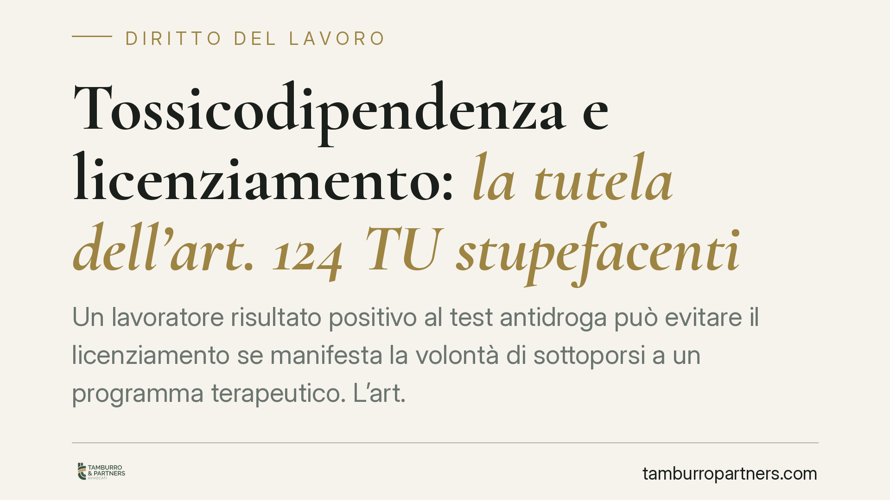

Tossicodipendenza e licenziamento: la tutela dell'art. 124 TU stupefacenti
Un lavoratore risultato positivo al test antidroga può evitare il licenziamento se manifesta la volontà di sottoporsi a un programma terapeutico. L'art. 124 del Testo Unico sugli stupefacenti riconosce il diritto alla conservazione del posto. La questione tocca il delicato equilibrio tra funzione riabilitativa della norma e sicurezza nelle mansioni sensibili, come quella dell'autista di trasporto pubblico.

Il caso
La vicenda riguarda un autista di una società di trasporto pubblico locale risultato positivo a un accertamento tossicologico. L'azienda ha avviato il procedimento disciplinare sfociato nel licenziamento. In sede di difesa, il lavoratore ha manifestato la volontà di sottoporsi a un programma terapeutico presso il SERT (Servizio per le Dipendenze dell'ASL), invocando la tutela prevista dal Testo Unico sugli stupefacenti.
Il punto controverso: la richiesta di cura formulata solo in fase difensiva, e non prima dell'addebito, può comunque attivare la protezione contro il licenziamento?
Inquadramento normativo
La norma di riferimento è l'art. 124 del d.P.R. 9 ottobre 1990, n. 309 (Testo Unico in materia di stupefacenti). Il primo comma riconosce ai lavoratori assunti a tempo indeterminato, dei quali sia accertato lo stato di tossicodipendenza e che intendano accedere a programmi terapeutici e di riabilitazione, il diritto alla conservazione del posto di lavoro per il tempo in cui la sospensione delle prestazioni è dovuta all'esecuzione del trattamento riabilitativo.
Il secondo comma fissa un limite temporale preciso: tale diritto opera per un massimo di tre anni e il periodo è regolato come aspettativa non retribuita (salvo diverse previsioni della contrattazione collettiva). È importante tenere distinti due profili: la *conservazione del posto* durante il trattamento e l'*aspettativa* quale strumento tecnico che sospende il rapporto senza retribuzione.
La ratio della disposizione è riabilitativa: il legislatore privilegia il recupero del lavoratore rispetto alla sanzione espulsiva. Secondo l'orientamento della Corte di Cassazione, la volontà di accedere al programma terapeutico può essere manifestata anche nel corso del procedimento disciplinare, perché ciò che conta è l'effettiva adesione al percorso di cura, non il momento formale della dichiarazione.
Va però considerato un secondo piano normativo, decisivo per le mansioni sensibili. Per i lavoratori addetti a mansioni che comportano rischi per la sicurezza di terzi — tra cui gli autisti di mezzi pubblici — operano l'Intesa Stato-Regioni del 30 ottobre 2007 e il successivo Provvedimento della Conferenza Unificata del 18 settembre 2008, che disciplinano gli accertamenti sanitari di assenza di tossicodipendenza e l'idoneità alla mansione specifica.
Implicazioni pratiche
Qui emerge una distinzione fondamentale, spesso trascurata.
Conservazione del posto e idoneità alla mansione specifica sono due cose diverse. L'art. 124 tutela il rapporto di lavoro e impedisce il licenziamento *per il solo fatto* della tossicodipendenza, a condizione che il lavoratore intraprenda il percorso di cura.
Ma per l'autista la positività comporta, in base alla normativa sugli accertamenti del 2007-2008, la sospensione dalla mansione a rischio fino al recupero dell'idoneità. Il lavoratore non può tornare alla guida finché il medico competente non certifica l'assenza di dipendenza.
In concreto: il licenziamento disciplinare fondato sulla sola positività, quando il lavoratore ha chiesto di curarsi, è a forte rischio di illegittimità. Il datore, però, non è obbligato a mantenere il dipendente nella mansione sensibile: deve gestire la sospensione dalla guida, valutando se esistano mansioni alternative compatibili.
Per il lavoratore, la finestra di tutela è reale ma condizionata: serve adesione effettiva e documentata al programma terapeutico. Una dichiarazione generica, non seguita dall'avvio della cura, difficilmente regge.
Cosa fare in concreto
Per il datore di lavoro:
- Prima di procedere al licenziamento, verifica se il lavoratore abbia manifestato — anche nella difesa disciplinare — la volontà di accedere a un programma terapeutico.
- Gestisci separatamente la sospensione dalla mansione a rischio (art. 124 e normativa accertamenti) dalla risposta disciplinare.
- Valuta la ricollocazione in mansioni compatibili durante il periodo di cura, documentando l'analisi.
- Coinvolgi il medico competente per il percorso di recupero dell'idoneità.
Per il lavoratore:
- Manifesta formalmente e per iscritto la volontà di curarti, anche in sede di procedimento disciplinare.
- Attiva senza ritardo il contatto con il SERT dell'ASL e conserva la documentazione dell'avvio del programma.
- Verifica la disciplina del tuo CCNL sull'aspettativa e sui termini applicabili.
Disclaimer
Contributo informativo a cura di Tamburro & Partners - Avv. Giuseppe Tamburro. Non costituisce parere legale.
Ogni storia di lavoro ha i suoi tempi.
Se gestisci HR e vuoi un confronto su contenzioso, ispezioni o licenziamenti, scrivi allo studio. Ti rispondiamo entro un giorno lavorativo.